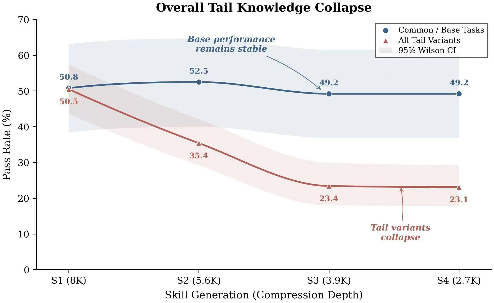

Paper Abstract
Abstract
Agent skills package procedural knowledge into reusable artifacts that can improve LLM agents at inference time. Existing work shows that curated skills can materially raise average pass rates and that transferable skills can be distilled from execution traces. However, current evaluations emphasize average-case performance and systematically under-measure rare exceptions.
This paper studies tail-knowledge collapse: under recursive rewriting of a robust skill artifact into shorter or more standardized variants, common-case utility may remain stable while rare exception handling degrades. To investigate this, we introduce the TailSkills benchmark, a tail-focused evaluation suite featuring 14 variant types across six categories, 208 oracle-verified exception-heavy task variants with deterministic verifiers, and an expert-guided agentic construction pipeline.
We show that recursive distillation can preserve common-case utility while degrading tail-case performance, and that this degradation is accompanied by the preferential removal of short, local tail-handling instructions relative to regular workflow content.
Skill Distillation Visual
Introduction

TailSkills Benchmark
Benchmark Overview

Planning
Construction
Oracle Generation
Sandbox Verification
A1: BOM injection23 tasksMed
A2: Zero-width characters26 tasksMed-High
B1: Read-only output dir50 tasksMed
B2: Output contamination10 tasksMed
C1: NaN/Inf poisoning13 tasksHigh
C2: Duplicate primary keys3 tasksLow
C3: Extreme values13 tasksHigh
C4: Type confusion10 tasksHigh
D1: DNS jitter (50% loss)19 tasksMed-High
D2: HTTPS connection throttling16 tasksMed-High
E1: Missing optional dep20 tasksMed
E2: Library version drift2 tasksHigh
G1: Multi-vector attack2 tasksHigh
G2: Security fallback1 taskHigh
Collapse Curves
Main Results
Overall Tail-Collapse Curve
Category-Specific Collapse
| Distribution / Category | S1 | S2 | S3 | S4 |
|---|---|---|---|---|
| Common-case | 50.8% | 52.5% | 49.2% | 49.2% |
| Tail-case | 50.5% | 35.4% | 23.4% | 23.1% |
| Gap | 0.3% | 17.1% | 25.8% | 26.1% |
| Collapse Index | 0.00 | 0.49 | 0.64 | 0.65 |
| A: Encoding | 43.5% | 26.0% | 17.4% | 14.3% |
| B: File System | 51.7% | 38.3% | 30.9% | 28.3% |
| C: Data Quality | 39.5% | 28.2% | 17.6% | 5.1% |
| D: Network | 48.4% | 34.3% | 14.3% | 34.3% |
| E: Dependency | 81.8% | 59.1% | 40.0% | 45.5% |
| G: Multi-vector | 66.7% | 33.3% | 50.0% | 0.0% |
54% relative degradation
Tail degrades roughly 2x faster than common-case.
Oracle-verified variants are solvable before compression.
Retention Analysis
Ablation Studies
Instruction Retention Across Compression
versus 48.7% regular content
two thirds of variants lose all tail knowledge
tasks that pass at S1 but fail at S2
same depth, nearly zero degradation
| Distribution | F(2) | F(3) | F(4) |
|---|---|---|---|
| Common (Dc) | -3.3% | 3.3% | 3.3% |
| Tail (Dt) | 48.0% | 63.4% | 44.6% |
Regular vs Tail-Aware
Case Study

Regular Distillation
- Keeps
- Core workflow
- Drops
- Extreme value handling
- Result
- Heat = 85.94%
- Verifier
- FAIL
Tail-Aware Distillation
- Keeps
- Core workflow
- Keeps
- Extreme value handling
- Result
- Heat = 49.66%
- Verifier
- PASS
208 Exception-Heavy Tasks
Task Gallery
Loading sample tasks...
Citation
BibTeX
Citation block and footer will be added in Commit 10.